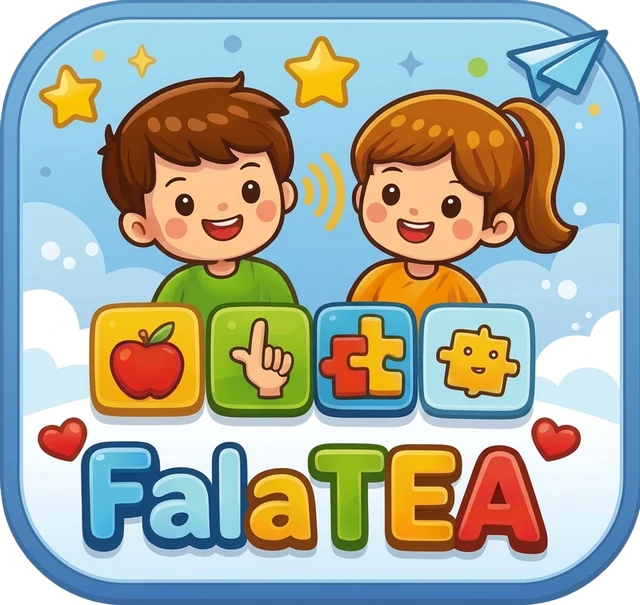
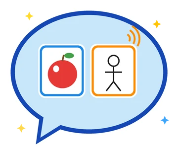
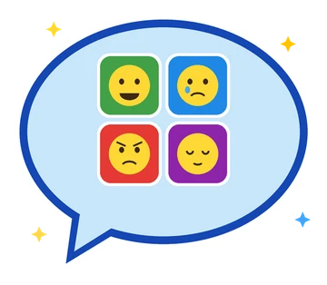
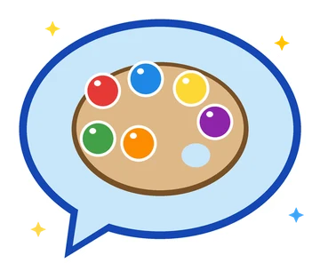
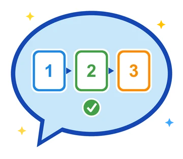

Crie um perfil
Cada criança tem seu próprio perfil, com nome, foto, cor e botões personalizados.
O FalaTEA é um aplicativo que ajuda pessoas com Transtorno do Espectro Autista (TEA) a se comunicarem por meio de pictogramas que falam. Basta tocar nas imagens para montar frases, e o app fala em voz alta.

Muitas pessoas com TEA têm dificuldade com a fala oral. A Comunicação Aumentativa e Alternativa (CAA) usa imagens e sons para que elas consigam expressar desejos, necessidades e sentimentos. O FalaTEA leva isso para o celular de forma simples, personalizável e gratuita.
Cada criança tem seu próprio perfil, com nome, foto, cor e botões personalizados.
As imagens ficam organizadas por categorias, como Ações, Pessoas, Objetos e Emoções.
A frase montada é falada em português do Brasil, com voz e velocidade ajustáveis.
Uma amostra de como funciona a grade de comunicação do app. Toque nos pictogramas para montar uma frase e depois em Falar.
Seu navegador não tem síntese de voz, mas você ainda pode montar frases.
Feito para crianças, famílias e terapeutas usarem no dia a dia.
Uma conta pode ter vários perfis, cada um com seus próprios botões, categorias, foto e cor.
Crie categorias e botões com texto, ícone ou uma foto da galeria, como o brinquedo favorito ou alguém da família.
Fala em português do Brasil, com voz masculina ou feminina e ajuste de velocidade e tom.
Uma paleta de cores acessível para que todos consigam diferenciar as categorias e os jogos.
Perfis, categorias e botões ficam salvos no Firebase, e as fotos no Cloudinary. Nada se perde ao trocar de celular.
A grade de botões se adapta automaticamente à orientação do aparelho.
Atividades curtas e visuais que reforçam vocabulário, emoções e rotinas, com estrelas como recompensa e uma ajuda quando a criança precisa.

Associe uma foto real ao pictograma correspondente.

Reconheça expressões: feliz, triste, bravo e cansado.

Associe cada cor ao seu nome, ouvindo a palavra falada.

Coloque em ordem os passos do dia a dia, como escovar os dentes ou tomar banho.
Desenvolvido em Flutter para Android, com backend serverless no Firebase.
O FalaTEA foi desenvolvido pelo Grupo FalaTEA como projeto do curso de Engenharia de Computação (10º semestre).
Repositório no GitHubGrupo FalaTEA · Engenharia de Computação, 10º semestre.